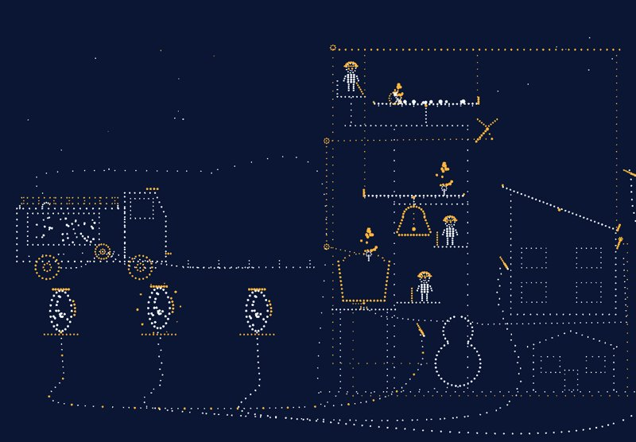
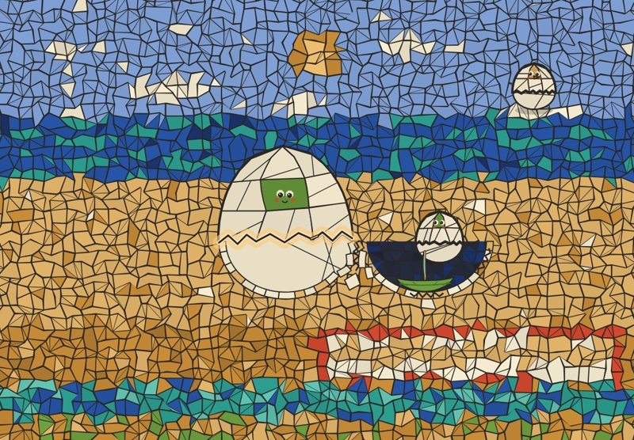

ずるっ！あわゆき消防楽団

ぴきぽろん！たまごのあとの水あそび
くるまのフェリー
R39・high・Fable 5.2＋Opus 5.5｜車をフェリーに乗せて、舵で海を自由に進み、港で車がぶーん
 くるまのフェリーR39・high・Fable 5.2＋Opus 5.5｜車をフェリーに乗せて、舵で海を自由に進み、港で車がぶーん
くるまのフェリーR39・high・Fable 5.2＋Opus 5.5｜車をフェリーに乗せて、舵で海を自由に進み、港で車がぶーん
くるまのフェリーR39・high・Fable 5.2＋Opus 5.5｜車をフェリーに乗せて、舵で海を自由に進み、港で車がぶーん
くるまのフェリーR39・high・Fable 5.2＋Opus 5.5｜車をフェリーに乗せて、舵で海を自由に進み、港で車がぶーん